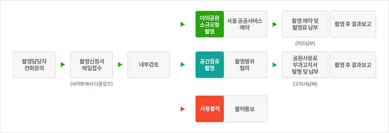

이용안내
공원 이용안내입니다. 장소사용 대관을 원하시면 문의하기로 이동해주세요.
-
해설사와 함께하는 시민 투어
화~토요일 14:00, 16:00 (1시간 소요)
서울시 공공 서비스 예약 사이트(yeyak.seoul.go.kr)에 문화비축기지 검색 후 희망 날짜에 신청 바랍니다.
-
오디오 가이드
대여 가능 시간 10:00~17:00
오디오 가이드를 통해 문화비축기지에 대한 깊이 있는 이야기를 들을 수 있습니다.
오디오 가이드 기기는 안내동에서 대여 가능하며 한국어와 영어, 일본어, 중국어를 제공하고 있습니다.
-
대여물품
유모차와 휠체어, 우산은 안내동에서 대여할 수 있습니다.
-
Cafe Tank6 운영안내
운영시간 : 10:00~19:00(월요일 휴관)
카페위치 : T6 지하2F
문화비축기지 장소사용(대관)
-
정기모집
1차 모집 : 11월~12월 경, 차기년도 일정(1월~12월) 우선 확정
2차 모집 : 1차 모집 이후, 당해 연도에 한하여 사용가능 공간 발생 시 시행
-
수시모집
정기 모집기간 외 사업별로 필요성이 인정되는 경우 시행
장소사용 승인 범위
승인대상
- 문화비축기지 문화공원의 운영 방향에 부합하는 행사
- 시민 문화예술 참여 기회 확대 및 문화예술 발전에 기여할 수 있는 행사
- 기타 서울특별시(문화비축기지)의 운영 취지에 맞는 행사 등
제한대상
- 장소사용 서울시 관련 법령 및 조례를 위반하는 행사
- 문화비축기지 건축물 및 공원시설에 대한 훼손 우려가 있는 행사
- 특정 종교, 정치적, 상업 행위만을 목적으로 하는 행사
- 개인 또는 특정 기업 및 단체의 홍보·캠페인 행사
- 기타 공익성을 심히 위협하고 시민 활동에 배타적인 행사(사회갈등 유발 및 시위목적 등)
문화비축기지 촬영
-
야외공원 소규모형 촬영
소규모 촬영으로 설치물 없이 야외에서 촬영(서울시 공공서비스예약 사이트에서 신청)
-
공간 점유형 촬영
예능, 드라마, 영화, 화보 등 실내공간 및 야외공원을 독점적으로 점유하는 촬영(내부 검토 후 공간 및 일정 협의필요)
촬영승인 절차
촬영제한
- 사전에 협의 또는 검토되지 않은 촬영의 경우
- 문화비축기지를 이용하는 시민들의 불편을 야기시키는 촬영의 경우
- 문화비축기지 문화공원의 운영방향에 적합하지 않은 촬영의 경우
- 자연재해 등의 부득이한 사유가 발행할 경우
촬영 신청방법
- - 예약일정 : 사용일 기준 일주일전 까지
- - 예약방법 : 야외공원 소규모 촬영 (서울시 공공서비스예약 바로가기), 공간점유형 촬영 (신청서 다운로드)
- 문화비축기지 문화기획팀 02-376-8733, taewon1106@seoul.go.kr
- 예약변경 및 취소 :예약일 하루 전까지 취소 및 변경 가능
문화비축기지 자원활동가
-
시민자원활동가 tankU
분야별 활동가를 모집하여 문화비축기지에서 1년 단위로 지속적인 봉사활동 진행
-
일반자원봉사
행사별 필요시 모집하는 단기 봉사활동
시민자원활동가 tankU 지원안내
- 대상,자격 : 사용일 기준 일주일전 까지
- 활동내용 : 공간안내관리, 전시해설 관람안내, 문화행사 지원, 재능기부활동 등 분야별 모집
- 선정절차 : 모집 공고 후 신청서 접수, 면접 심사를 통해 선정
- 혜택 : 공통, 역량강화 교육 및 워크숍, 수료증 수여, SNS 활동 시 원고료 지급 등
일반자원봉사
- 대상,자격 : 활동을 희망하는 시민 및 기업·단체
- 활동내용 : 공원 환경정비, 물품 정리, 행사운영 등 문화비축기지를 구성하는 다양한 요소별 활동지원
- 선정절차 : 365자원봉사자포털 시스템을 통한 신청